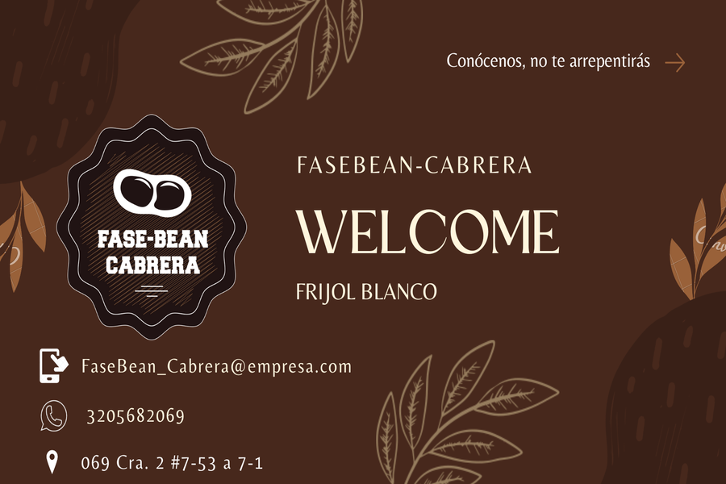
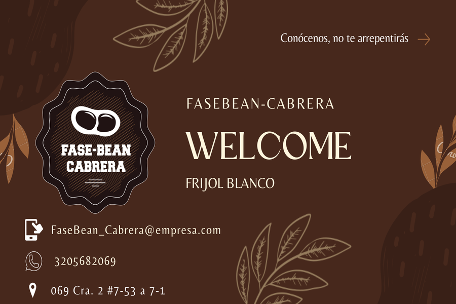

¿Quiénes somos?
Bienvenidos a FaseBean Cabrera, tu fuente confiable de granos de frijol blanco de alta calidad. Nos enorgullece ofrecer una amplia selección de granos cuidadosamente tratados y empaquetados para satisfacer las necesidades de tu mesa. Trabajamos con agricultores comprometidos con prácticas sostenibles y ofrecemos un servicio excepcional. Descubre la diferencia en FaseBean Cabrera. ¡Cultiva una alimentación saludable y satisfactoria con nosotros!
Conoce nuestro equipo de trabajo:
- Nombre: Jeferson Gonzalez
- Carrera: Ingeniería agrícola
- Nombre: Christian Chamorro
- Carrera: Ingeniería agrícola
- Nombre: Daniela Aza
- Carrera: Ingeniería agrícola
- Nombre: Maria Muyuy
- Carrera: Ingeniería agrícola
En FaseBean Cabrera, creemos en proporcionarte información detallada sobre las características de nuestro grano de frijol blanco. Explora nuestro apartado de características para descubrir los beneficios nutricionales, el tamaño y otras cualidades únicas de nuestro grano. Te invitamos a sumergirte en el fascinante mundo del grano de frijol blanco y a descubrir por qué son una elección saludable y deliciosa.
¿Por qué escoger nuestro frijol blanco?
¡La mejor calidad!
Nuestros granos de frijol blanco son cuidadosamente seleccionados para garantizar una calidad superior.
Alto valor nutricional
Nuestros granos de frijol blanco son una fuente excepcional de nutrientes esenciales. Son ricos en proteínas, fibra, vitaminas y minerales, lo que los convierte en una opción saludable y nutritiva para incluir en tu dieta diaria.
Sabor excepcional
Nuestros granos de frijol blanco son conocidos por su sabor delicioso y su textura suave. Añaden un toque cremoso y satisfactorio a una variedad de platos, desde sopas y guisos hasta ensaladas y platillos principales.
Versatilidad culinaria
Nuestros granos de frijol blanco son extremadamente versátiles en la cocina. Puedes utilizarlos en una amplia gama de recetas, desde platillos tradicionales hasta opciones más creativas.
Cultivo sostenible
Nos preocupamos por el medio ambiente y nos comprometemos a promover prácticas agrícolas sostenibles. Trabajamos en estrecha colaboración con agricultores comprometidos con la agricultura responsable.
Servicio al cliente excepcional
Valoramos a nuestros clientes y nos esforzamos por brindar un servicio al cliente excepcional. Estamos aquí para responder tus preguntas, ofrecerte recomendaciones y asegurarnos de que tengas una experiencia satisfactoria.
Nuestro empaque

¡Descubre nuestro increíble paquete de granos de frijol blanco, una opción irresistible para satisfacer tus necesidades alimenticias y llevar tus comidas al siguiente nivel! Nuestro paquete ha sido cuidadosamente diseñado para brindarte una experiencia excepcional desde el primer momento en que lo ves. Con un diseño moderno y elegante, el paquete resalta la calidad y frescura de nuestros granos de frijol blanco.
En su interior, encontrarás granos de frijol blanco de la más alta calidad, seleccionados con atención para asegurar su integridad y sabor excepcional. Cada grano es un tesoro nutricional, repleto de proteínas, fibra y vitaminas esenciales que promueven una alimentación equilibrada y saludable.Ya sea que estés preparando un delicioso guiso, una ensalada refrescante o una sopa reconfortante, nuestros granos de frijol blanco en este llamativo paquete serán la elección perfecta. Despierta tu creatividad culinaria y descubre infinitas posibilidades para incorporar estos granos en tus recetas favoritas.
Nuestros regalos
 

Nuestras tarjetas de presentación son la representación perfecta de nuestra empresa. Diseñadas con elegancia y estilo, reflejan nuestra identidad y valores de manera impactante. Cada tarjeta es una pequeña obra de arte que transmite profesionalismo y confianza. Con detalles cuidadosamente seleccionados y una calidad excepcional, nuestras tarjetas de presentación capturan la atención y dejan una impresión duradera. Son el complemento ideal para establecer conexiones comerciales sólidas y mostrar nuestro compromiso con la excelencia en cada interacción.
Contáctanos
--• FaseBean_Cabrera@empresa.com